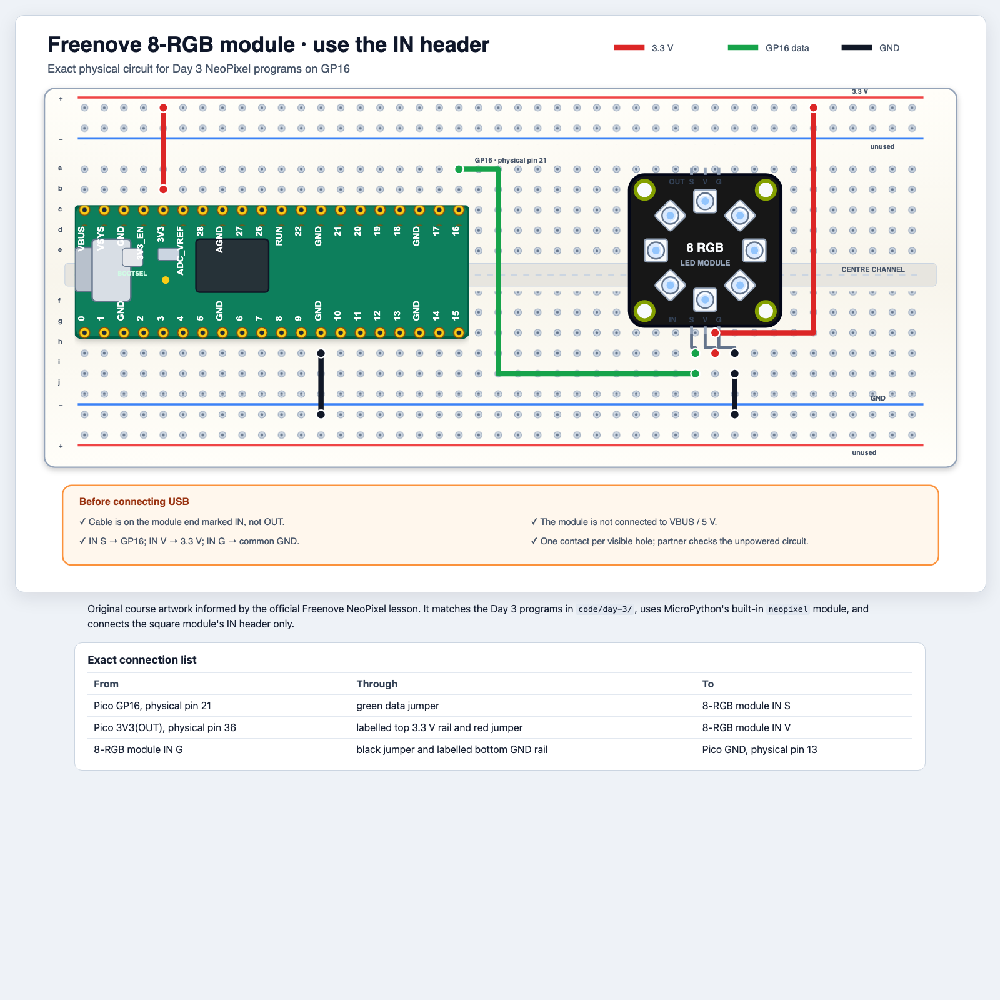

Python in the physical world · Day 3
Name repeated jobs with functions, control eight RGB pixels, and build a Pixel Pet that reacts to a knob.
Mission: turn repeated steps into named tools you can call again.
Learning goals
Name a function call and its argument.
Define and call your own function with def.
Explain parameters, returned values, and inside-only names (local variables).
Use range(8) to visit pixel positions 0 through 7.
Follow the order of a small nested loop.
Test the RGB module first, then add the knob layer for Pixel Pet.
Today’s route
for, range,First learn the pattern in small code. Then use it with live hardware.
Part 1 · Functions name jobs
You have called functions before writing your own.
Familiar calls
Watch and discuss · Name the function and the argument
print("Ready")
sleep_ms(500)
print("Go!")
The useful name before the parentheses, such as print.
The value inside the parentheses, such as "Ready" or 500.
Today the timing tools are supplied. Your job is to recognise what each call asks Python to do.
Define, then call
def gives a repeated job a new nameTry in Thonny · Type this smaller example and run it
def cheer():
print("Go, Pico!")
cheer()
cheer()
def cheer():Defines the job and gives it the name cheer.
cheer()Calls the job. The body runs only when Python reaches the call.
One name can replace many repeated lines.
Parameters and colour data
Try in Thonny · Print the grouped value before we use hardware
GREEN = (0, 30, 0)
def show_colour(colour):
print("Colour:", colour)
show_colour(GREEN)
(red, green, blue) is one grouped colour value for this workshop.
colour is the parameter. GREEN is the argument sent into the call.
Keep RGB numbers low, such as 30, so the pixels are bright enough to see without glare.
Return versus print
print shows a value; return hands it backWatch and discuss · Which line helps later code make a decision?
def doubled(number):
return number * 2
print(doubled(4))
answer = doubled(4)
print(...)Displays a value now.
return ...Sends a value back so other code can store it, compare it, or pass it on.
If a function only prints a colour, another function cannot use that colour to choose an animation.
Inside-only names
Watch and discuss · Which name disappears after the call ends?
def make_blue():
intensity = 25
return (0, 0, intensity)
| Name | What it means here |
|---|---|
make_blue | the function name |
intensity | a local variable used only inside this call |
Outside the function, Python can use the returned tuple. It cannot use the inside-only name intensity.
Part 2 · Loops and positions
Loops let one block of code visit every pixel position.
A for loop
range(8) produces 0 through 7Try in Thonny · Predict all eight lines before you press Run
for index in range(8):
print(index)
range(8)Creates the counting values 0, 1, 2, 3, 4, 5, 6, 7.
The indented line runs once for each value, with index holding the current value.
An index is a position number. Our eight pixels use index positions 0 through 7.
Pixel positions
On paper · Mark the first position, the last position, and the one that is out of range
pixels[0]
pixels[1]
pixels[2]
pixels[3]
pixels[4]
pixels[5]
pixels[6]
pixels[7]
for index in range(8):
pixels[index] = (0, 0, 20)
Predict: pixels[8] asks for a ninth position that this module does not have.
Nested loops
On paper · Trace the order before anyone runs it
for lap in range(2):
for colour in ["red", "green"]:
print(lap, colour)
| Step | lap | colour |
|---|---|---|
| 1 | 0 | red |
| 2 | 0 | green |
| 3 | 1 | red |
| 4 | 1 | green |
This is the same pattern you will see at the end of 02_pixel_functions.py, just with a smaller trace.
Part 3 · First hardware layer
One known-working layer makes the next layer safer and easier to debug.
Build while unplugged · Task 1

Test the RGB module · Task 1
Test the circuit · Run the smallest check before changing any code
RED = (30, 0, 0)
GREEN = (0, 30, 0)
BLUE = (0, 0, 30)
AMBER = (20, 10, 0)
An RGB tuple groups one colour as (red, green, blue). Amber mixes red and green. Stop this test and unplug again before the next build.
See reuse in working code
02_pixel_functions.py names three jobs clearlyTry in Thonny · Run the file, then answer the prompts
def show_colour(colour):
pixels.fill(colour)
pixels.write()
def chase(colour, delay_ms):
for index in range(PIXEL_COUNT):
...
def level_to_colour(percent):
...
Returning a colour is more reusable than printing a colour because later code can still use the value.
Open 02_pixel_functions.py and match each function name to its one job.
Part 4 · Daily challenge
Keep the working RGB layer, then add the knob layer and code one function at a time.
Build while unplugged · Task 2
| Potentiometer pin | Connection |
|---|---|
3V3 outer pin | the same powered 3.3 V rail as RGB IN V |
centre WIPER | GP26 / ADC0 |
GND outer pin | the same common GND rail as RGB IN G |
Stop the RGB test, unplug USB, keep its three working wires, add these three knob wires, then partner-check all six connections.
Open the starter
Test the circuit · Open 03_pixel_pet_starter.py
pixels and knob are already created.finally block already turns the pixels off safely.read_energy_percent(), briefly print raw_value and turn the knob to confirm changing numbers, then return 0-100.choose_state(), return "sleepy", "curious", or "excited".Turn the knob through all three ranges. Check the printed energy and state before writing an animation.
Complete the displays
Try in Thonny · Test each function before adding the next
sleepy
slow blue pulse
curious
green moving pixel
excited
quick colourful sparkle
show_sleepy() and test it directly.show_curious() using indexes 0-7 and test it.show_excited() with low RGB values and test it.Exit ticket
On paper · Answer before cleanup
print(energy)
return energy
One line shows a value now. The other line sends a value back so another function can make a decision with it.
Your answer: Which line lets choose_state(...) use the value?
Teacher reference
Unit 3 lessons 3.01-3.04: built-in function calls and arguments, user-defined functions, return versus print, and local scope.
Unit 4 lessons 4.01-4.03: for loops, range, indexes, and nested-loop tracing.
day-3-make-it-reusable.md, WIRING_AND_SAFETY.md, rgb8-module.html, rgb8-module.png, 01_neopixel_colours.py, 02_pixel_functions.py, and 03_pixel_pet_starter.py.
TEALS source repositories: Unit 3 slide decks and Unit 4 slide decks.